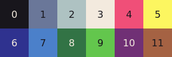

LITECANVAS
Litecanvas is a lightweight HTML5 canvas engine suitable for small web games, prototypes, game jams, animations, creative programming, learning game programming and game design, etc. Just install our NPM package or load/download the CDN by adding it as a script tag in your HTML.
CDN (development):
https://unpkg.com/litecanvas/dist/dist.dev.js
CDN (production):
https://unpkg.com/litecanvas/dist/dist.min.js
Starter Template (using esbuild):
https://github.com/litecanvas/template
Note: This project is still under development. All feedback is appreciated! For bugs, suggestions or contribuitions open a issue in our Github Repository.
Hello World
Create a text file named index.html, put the code below and open it your browser.
<!DOCTYPE html>
<html>
<head>
<meta name="viewport" content="width=device-width, initial-scale=1.0, user-scalable=no"/>
</head>
<body>
<script src="https://unpkg.com/litecanvas/dist/dist.dev.js"></script>
<script>
// start the engine
litecanvas();
function draw() {
// clear the screen with black (color #0)
cls(0)
// write 'Hello World' in x=0 y=0
text(0, 0, 'Hello World')
}
</script>
</body>
</html>Basic boilerplate
litecanvas({
loop: {
init, update, draw, resized,
tap, tapping, untap, tapped
}
})
function init(instance) {
// run once before the game starts
}
function update(dt) {
// called at 60 fps by default
// note: `dt` is a fixed deltatime (fps/1000)
}
function draw() {
// used to draw your graphics
}
function resized() {
// called when the browser was resized
// also called once before init()
}
function tap(x, y, tapId) {
// called when a tap (click/touch) starts
// equivalent to "mousedown" and "touchstart" browser events
// Notes:
// - `tapId` is used to handle multiple touches
// - each touch has a unique `tapId` >= 1
// - mouse's `tapId` always equal to 0 (zero)
}
function untap(x, y, tapId) {
// called when a tap end
// equivalent to "mouseup" and "touchend" browser events
}
function tapping(x, y, tapId) {
// called when a tap moves
// equivalent to "mousemove" and "touchmove" browser events
}
function tapped(x, y, tapId) {
// called when a tap stars and ends in a short time
// equivalent to "click" browser events
}
Default Colors
Note: Every time a function asks for a color argument, choose one of these numbers.
Game Configuration
// Initialize the game
litecanvas(settings = {});
// the game loop callbacks
// if loop = undefined, will use global functions:
// window.init(), window.update(dt), window.draw(), etc
settings.loop = {
init: Function?,
update: Function?,
draw: Function?,
resized: Function?,
tap: Function?,
untap: Function?
tapping: Function?,
tapped: Function?
}
// the canvas (by default a new canvas is created)
settings.canvas = null
// make the game screen fill the entire screen
settings.fullscreen = true
// the game screen size
// by default, the game fills the entire screen
settings.width = null
settings.height = settings.width || null
// Determines whether the game loop should
// be paused when the "blur" event happens.
settings.pauseOnBlur = true
// Determines whether the canvas should
// scale to fill the canvas
settings.autoscale = true
// enable smooth drawing
settings.antialias = false
// disables antialias
// and force the autoscale to use integers
settings.pixelart = false
// exposes all methods and properties (see below)
// in the global scope
settings.global = true
// set to `false` to disable the default tap handler
// useful to create your own mouse/touch handler
settings.tapEvents = true
// set to `false` to disable the `iskeydown()` method
// useful to create your own keyboard handler
settings.keyboardEvents = trueGlobal Variables
// the game canvas
CANVAS: HTMLCanvasElement
// the game screen width
WIDTH: number
// the game screen height
HEIGHT: number
// the center X of game screen
CENTERX: number
// the center Y of game screen
CENTERY: number
// the amount of time since the game started
ELAPSED: number
// the current mouse's X-position
// or -1 (if the mouse was not used or detected)
MOUSEX: number
// the current mouse's Y-position
// or -1 (if the mouse was not used or detected)
MOUSEY: number
// the default sound played in `sfx()`
DEFAULT_SFX: number[]
// Math constants
PI: number // approximately 3.14 radians (180°)
TWO_PI: number // approximately 6.28 radians (360°)
HALF_PI: number // approximately 1.57 radians (90°)Functions for Drawing
/**
* SHAPES DRAWING-RELATED FUNCTIONS
*/
// clear the canvas
// if color is a number, fill the entire screen with which color
// if null just clear the screen
cls(color: number | null): void
// draw a color-filled rectangle
// radii is for border radius
rectfill(x, y, w, h, color = 0, radii?: number | number[]): void
// draw a outline rectangle
// radii is for border radius
rect(x, y, w, h, color = 0, radii?: number | number[]): void
// draw a color-filled circle
circfill(x, y, r, color = 0): void
// draw a outline circle
circ(x, y, r, color = 0): void
// draw a line from one point (x1, y1) to another (x2, y2)
line(x1, y1, x2, y2, color = 0): void
// Sets the thickness of lines
linewidth(value: number): void
// Sets the line dash pattern used when drawing lines
linedash(value: number[], ofsset?: number): void
/**
* TEXT DRAWING-RELATED FUNCTIONS
*/
// Draw a text
// style can be "normal", "italic" and/or "bold"
text(x, y, text, color? = 3, style? = 'normal'): void
// Sets the text alignment and baseline
// default values: align = 'start', baseline = 'top'
// see: https://developer.mozilla.org/en-US/docs/Web/API/CanvasRenderingContext2D/textAlign
// see: https://developer.mozilla.org/en-US/docs/Web/API/CanvasRenderingContext2D/textBaseline
textalign(align?: string, baseline?: string): void
// Sets the font family for texts
textfont(fontName: string): void
// Sets the font size (default: 32)
textsize(size: number): void
/**
* IMAGE DRAWING-RELATED FUNCTIONS
*/
// draw a image
image(x, y, image: Image|HTMLCanvasElement): void
// create a offcanvas and to make an image on it
// data can be a array of strings (to draw pixel art)
// see: https://github.com/litecanvas/game-engine/blob/main/samples/pixelart/pixelart.js
// or data can be a function with drawing operations
// see: https://github.com/litecanvas/game-engine/blob/main/samples/paint/paint.js
// the options are:
// * scale?: default = 1.
// * canvas?: by default creates a new canvas.
paint(width, height, data: string[]|function, options?): OffscreenCanvas
/**
* ADVANCED DRAWING-RELATED FUNCTIONS
*/
// Set or get the current canvas context 2D
// see: https://developer.mozilla.org/en-US/docs/Web/API/CanvasRenderingContext2D
ctx(context?: CanvasRenderingContext2D): CanvasRenderingContext2D
// save the canvas state
push(): void
// restore the canvas state to the last saved state
pop(): void
// Adds a translation transformation to the current matrix
translate(x: number, y: number): void
// Adds a scaling transformation to the canvas units
// horizontally (x) and/or vertically (y)
scale(x: number, y?: number): void
// Adds a rotation to the transformation matrix
rotate(radians: number): void
// Sets the alpha (opacity) value to apply when drawing new shapes and images
// see: https://developer.mozilla.org/en-US/docs/Web/API/CanvasRenderingContext2D/globalAlpha
alpha(value: number): void
// Fills the current path
// see: https://developer.mozilla.org/en-US/docs/Web/API/CanvasRenderingContext2D/fill
fill(color: number, path?: Path2D): void
// Outlines the current path
// see: https://developer.mozilla.org/en-US/docs/Web/API/CanvasRenderingContext2D/stroke
stroke(color: number, path?: Path2D): void
// Create a clipping region based in a Path2D instance
// see: https://github.com/litecanvas/game-engine/blob/main/samples/clip/clip.js
// note: before call `clip()` you must save the context using `push()` and `pop()`
clip(path: Path2D)
// Create (or clone) a Path2D instance
// see: https://developer.mozilla.org/en-US/docs/Web/API/Path2D/Path2D
path(arg?: Path2D | string): Path2DFunctions for Sound
// Plays ZzFX sound effects and returns the played sound array or `false`.
// example: sfx([2,.05,598,.07,0,.19,0,1.32,9.9,-70,0,0,0,0,0,0,.3,.02,0,.04])
// see: https://killedbyapixel.github.io/ZzFX/
// note: if the first argument is omitted, a default sound is played (see DEFAULT_SFX)
// example: sfx() or sfx(null)
sfx(ZzFXparams?: number[], pitchSlide = 0, volumeFactor = 1): number[] | boolean
// Sets the ZzFX global volume factor.
// note: use 0 (zero) to mute all ZzFX sounds.
volume(value: number): voidFunctions for Keyboard
// Checks if which key is currently pressed in your keyboard.
// note: you can check if any key is pressed using `iskeydown("any")`.
// note: to check the space key use `iskeydown(" ")`.
iskeydown(key: string): booleanFunctions for Math
/** General Math */
// Calculates a linear (interpolation) value over `t`.
// example: lerp(0, 50, 0.5) returns 25
// learn more: https://gamedev.net/tutorials/programming/general-and-gameplay-programming/a-brief-introduction-to-lerp-r4954/
lerp(a: number, b: number, t: number): number
// Convert degrees to radians
deg2rad(n: number): number
// Convert radians to degrees
rad2deg(n: number): number
// Constrains a number between `min` and `max`.
// example: clamp(50, 0, 100) return 50
// example: clamp(150, 0, 100) return 100
// example: clamp(-10, 0, 100) return 0
clamp(value: number, min: number, max: number): number
// Wraps a number between `min` (inclusive) and `max` (exclusive).
// example: wrap(50,0,100) return 50
// example: wrap(125, 0, 100) return 25
wrap(value, min, max): number
// Re-maps a number from one range to another.
// example: map(2, 0, 10, 0, 100) returns 20
map(val, start1, stop1, start2, stop2, withinBounds = false ): number
// Maps a number from one range to a value between 0 and 1.
// example: norm(50, 0, 100) returns 0.5
norm(value, min, max): number
// Returns the sine of a number in radians.
sin(angle: number): number
// Returns the cosine of a number in radians.
cos(angle: number): number
// Returns the tangent of a number in radians.
tan(angle: number): number
// Returns the angle between the positive x-axis
// and the origin (0, 0) to the point (x, y).
atan2(y:number, x: number): number
// Returns the square root of the sum of squares of its arguments.
hypot(...ns: number): number
// Returns the absolute value of a number.
abs(n: number): number
// Rounds up and returns the smallest integer greater than or
// equal to a given number.
ceil(n: number): number
// Returns the value of a number rounded to the nearest integer.
round(n: number): number
// Rounds down and returns the largest integer less than or
// equal to a given number.
floor(n: number): number
// Returns the integer part of a number
// by removing any fractional digits.
trunc(n: number): number
// Returns the smallest of the numbers given as
// input parameters, or `Infinity` if there are no parameters.
// example: min(-10, 15, -1) returns -10
min(...ns: number): number
// Returns the largest of the numbers given as input parameters,
// or `-Infinity` if there are no parameters.
// example: max(-10, 15, -1) returns 15
max(...ns: number): number
// Returns the value of a base raised to a power.
// example: pow(2, 3) returns 2³ or 8
pow(x: number, y: number): number
// Returns E (Euler's number) raised to the power of a number.
// example: exp(1) returns 2.7182... (approximately)
exp(n: number): number
// Returns the square root of a number.
sqrt(n: number): number
// Returns 1 or -1, indicating the sign of a number.
// If the number is 0, it will returns 0.
sign(n: number): number
/** Random Number Generator (RNG) */
// Generates a pseudo-random float between min (inclusive)
// and max (exclusive)
rand(min = 0, max = 1.0): number;
// Generates a pseudo-random integer between min (inclusive)
// and max (inclusive)
randi(min = 0, max = 1): number;
// If a value is passed, initializes the random number generator (RNG)
// with an explicit seed value (a number >= 0). Otherwise, returns the current seed state.
// By default, the initial seed is the current timestamp (from `Date.now()`).
seed(value: number | null): number;
/** Collision Check (AABB) */
// Check a collision between two rectangles.
// All arguments are required and must be numbers.
colrect(x1, y1, w1, h1, x2, y2, w2, h2): boolean
// Check a collision between two circles.
// All arguments are required and must be numbers.
colcirc(x1, y1, r1, x2, y2, r2): booleanEngine API
The following functions are most used internally, but also very useful when creating plugins.
// Loads a plugin.
// see: https://github.com/litecanvas/game-engine/blob/main/samples/plugin-basics/plugin-basics.js
use(callback): void
// Registers a game event callback and
// returns a function that unregister this callback.
listen(event: string, callback: Function): Function
// Triggers a game event and call its registered callbacks.
emit(event: string, arg1?, arg2?, arg3?, arg4?): void
// Resizes the game canvas.
// Also, emits the "resized" (use `listen` to observe this event).
resize(width: number, height: number): void
// Sets the scale of the game's delta time (dt).
// By default is equal to 1.
// Values higher than 1 increase the speed of time,
// while values smaller than 1 decrease it.
// A value of 0 freezes time (equivalent to pausing).
timescale(value: number): void
// Sets the target FPS (frames per second or frame rate)
setfps(value: number): void
// the following functions are most used by plugins...
// Create or update an global variables (and instance properties)
setvar(name: string, value: any): void
// Gets the color value given its index.
// example: getcolor(0) returns "#111"
getcolor(index: number): string
// shutdown the engine
// also emits the "quit" event
quit(): voidPlayground Features
Extra packages
The following packages are automatically loaded into the playground:
Public assets
We have a few assets you can use to help prototype ideas.
Cool 1-bit sprites made by Kenneylet sprites;
litecanvas({
pixelart: true
})
function init() {
// first, load the spritesheet image
loadImage('/images/sprites.png', (res, { splitFrames }) => {
// after loaded, split the image in multiple 16x16 sprites
sprites = splitFrames(res, 16, 16)
})
}
function draw() {
cls(0)
if (LOADING) return; // wait the asset loader
push()
// These sprites are 16x16 (pretty small),
// so let's zoom in 3x
scale(3)
// draw each sprite
for (let y = 0, index = 0; y < 8; y++) {
for (let x = 0; x < 8; x++, index++) {
// each index is a sprite
image(x * 16, y * 16, sprites[index])
}
}
pop()
}Monogram font by datagoblin
litecanvas()
function init() {
// first, load the font
loadFont('monogram', '/fonts/monogram.ttf')
}
function draw() {
cls(0)
if (LOADING) return; // wait the asset loader
textfont('monogram') // important: set the font family
textsize(64)
text(0, 0, 'Hello world')
}Useful tools
- litepixel: Tiny pixel art editor for litecanvas games.
- ZzFX Designer: UI to generate ZzFX sounds.